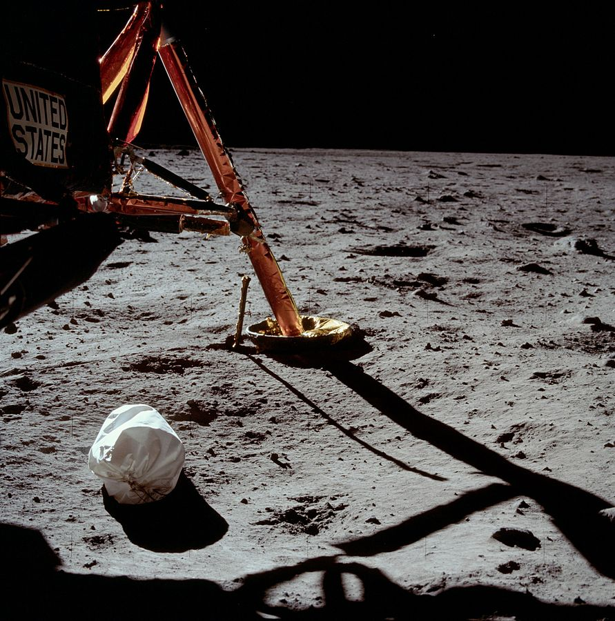

Исследование Космоса
Это сайт о космических миссиях.
Исследование космоса — изучение космического пространства и небесных тел с помощью космических аппаратов. Исследования космоса ведутся как с помощью пилотируемых космических полетов, так и с помощью автоматических космических аппаратов. Техническому исследованию космоса предшествовало развитие астрономии и создание крупных и относительных эффективных ракет в начале XX века. Освоение космоса было одним из направлений соперничества между СССР и США в холодной войне. Началом эпохи освоения космоса можно считать запуск первого искусственного спутника Земли — Спутник-1, запущенного Советским Союзом 4 октября 1957 года.